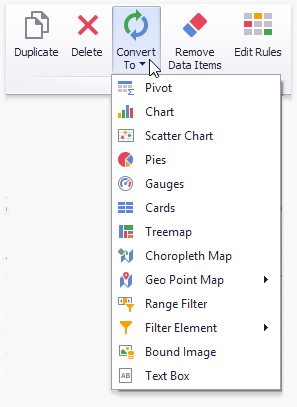

Convert Dashboard Items
The Dashboard Designer provides the capability to convert data-bound dashboard items to another type. To convert the selected dashboard item to another type, use the Convert button in the ribbon's Home tab or the corresponding command in the item's context menu.

The Dashboard Designer always preserves the following settings for data-bound dashboard items.
- The set of data items used to bind the dashboard item to data.
- Data shaping settings of data items and their names.
- A custom name displayed within the dashboard item caption.
The following settings are kept if the dashboard item is being converted to an item that also supports this feature.
- Master Filtering settings (e.g., the specified master filter mode) and Drill-Down settings (e.g., the target dimension).
- Conditional Formatting settings.
- Coloring settings.
- Calculation settings.
For different types of dashboard items, some specific settings can be preserved. For example, the following settings are preserved.
- Legend settings for the Chart/Scatter Chart dashboard items.
- Series types for the Chart/Range Filter dashboard items.
- Element arrangement settings for the Pie/Card/Gauge dashboard items.
- Caption settings for the Pie/Gauge dashboard items.
- Navigation settings for Choropleth Map/Geo Point Maps.
- The attribute whose values are displayed within shape titles for Choropleth Map/Geo Point Maps.
- Legend settings for the Choropleth Map/Geo Point Maps.
- Clustering settings for Geo Point Maps.